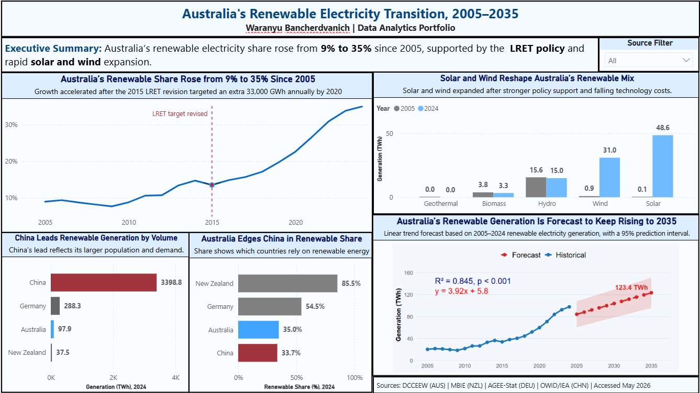

02 / Forecasting
Is Australia on track for 82% renewable electricity?
An analytical brief for a government audience: twenty years of Australian electricity data, benchmarked against three comparison countries and forecast to 2035, to answer one question honestly.
2005 to 2024
against an 82% target
p < 0.001, n = 20

The question
The Australian government has committed to 82% renewable electricity by 2030. Written as a brief for a DCCEEW-style audience, this project asks the practical version of that commitment: is Australia on track, and if not, how far short will it fall?
It breaks into four sub-questions the dashboard has to answer:
- How has Australia's renewable share changed since 2005?
- Which technologies are actually driving that growth?
- How does Australia compare with China, Germany and New Zealand?
- What does a forecast to 2035 suggest about reaching the target?
The data
Four national datasets, each in a different format, unit, and source taxonomy — reconciling them was most of the work.
- Australia — DCCEEW Australian Energy Statistics, Table O. Financial years converted to calendar years on an end-year convention.
- New Zealand — MBIE Electricity Statistics. Net generation, which differs from gross by roughly 1–2%.
- Germany — Umweltbundesamt / AGEE-Stat, extracted manually from the official PDF.
- China — Our World in Data, sourcing IEA, used as an authoritative intermediary where English NBS data was not freely available.
All four were standardised in Power Query into five consistent renewable categories — solar, wind, hydro, biomass, geothermal — with GWh converted to TWh. Every transformation is recorded in a data decisions log rather than left implicit.
What the data showed
-
01
Australia is moving in the right direction, but not fast enough. Renewable share rose from about 9% in 2005 to 35% in 2024 — but a linear forecast reaches only 44.6% by 2035, roughly half the 82%-by-2030 target.
-
02
Solar and wind are carrying the transition, not hydro. Solar grew from ~0.1 TWh to ~48.6 TWh and wind from ~0.9 TWh to ~31.0 TWh between 2005 and 2024, while hydro stayed roughly flat. The growth is entirely in the newer technologies.
-
03
International comparison depends entirely on the measure you pick. China generates the most renewable electricity by volume (~3,398 TWh), but Australia's renewable share of 35.0% slightly edged China's 33.7% in 2024. New Zealand (85.5%) and Germany (54.5%) remain well ahead on share. Choosing volume or share tells two opposite stories — so the dashboard shows both.
The forecast, live
The dashboard's forecast runs in R so the reader can check the method. Here is the same linear regression, computed in your browser from the project's actual data — equation, fit, and 95% prediction interval included.
Dots are DCCEEW annual data, 2005–2024. The shaded band is the 95% prediction interval; the line extends the historical trend to 2035. On the current trajectory, the 82%-by-2030 target is out of reach — which is the report's central finding.
How it was built
Galaxy schema, not a single fact table. Two fact tables (renewable generation and total generation) share three dimensions: country, year, and energy source. A single fact table would have repeated total-generation values five or six times per country-year and overcounted the moment anyone summed the column. The galaxy schema makes that error structurally impossible.
Forecasting in R rather than Power BI's built-in tool. Two linear-regression visuals — one for generation in TWh, one for renewable share — project to 2035 with a 95% prediction interval. R was chosen because it prints the regression equation, R², and p-value directly onto the chart, making the method transparent and checkable by the reader. Both models fit well: R² ≈ 0.845–0.847, p < 0.001.
One page, five visuals, scoped slicers — filtering one question never silently breaks the answer to another.
Limitations I'd state up front
The forecast is a simple linear regression and should be read as a planning signal, not a prediction. Renewable growth accelerated after the mid-2010s, so including the slower early years makes the trend deliberately conservative — the real figure may land higher. Saying so is part of the analysis, not a footnote to it.